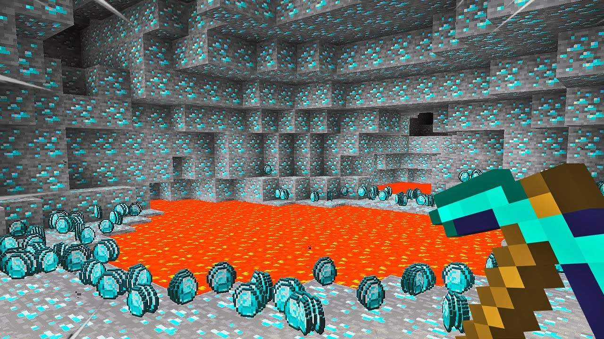
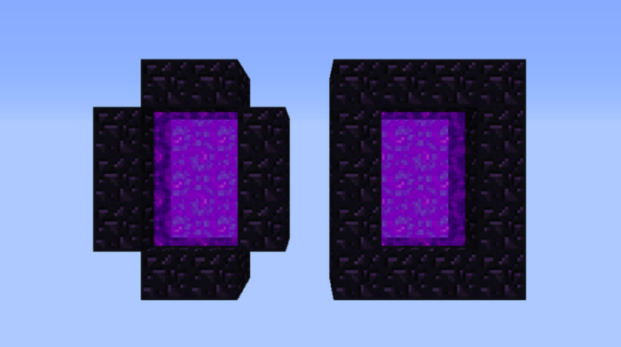

DICAS PARA GAMEPLAY 🤓☝🏻
Como encontrar diamantes?
- A partir da camada -33 da versão mais recente(1.21), você terá grandes chances de encontrar diamantes. Para verificar sua camada, basta apertar a tecla F3 em seu teclado e ir em XYZ para verificar.

Como criar o portal do Nether?
- Um portal do Nether é construído como um quadro de obsidiana (de 4 × 5 no mínimo e 23 × 23 no máximo). Os blocos dos cantos do quadro não são necessários, mas os portais criados pelo jogo sempre os inclui. A obsidiana pode ser colocada manualmente (minerando ela) ou criada ali (usando lava e água).

O PEDRO É GAY?
SIMMMMMMMMM! O PEDRO É O MAIOR GAYZÃO QUE JÁ EXISTIU